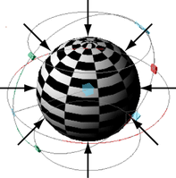
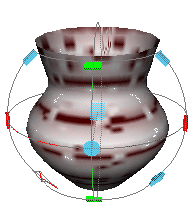

球形映射使用基于球形图形的投影为对象创建 UV，该球形图形绕网格折回。该投影最适合完全封闭且在球体中可见的图形，这些图形无需对部分进行投影或中空。

使用球形映射技术创建 UV
- 选择要将 UV 投影到的面。
- 选择，或在“UV 编辑器”(UV Editor)的“UV 工具包”(UV Toolkit)中，转到。
- 使用操纵器更改投影形状的位置和大小。
- 使用 UV 编辑器以查看和编辑生成的 UV。

注： 投影映射每次仅在单个对象上正常工作。如果需要在单个步骤中将投影应用于多个多边形对象，请将这些对象组合为一个对象，并应用投影，然后分离后面部分。否则，需在每个对象上分别执行投影。